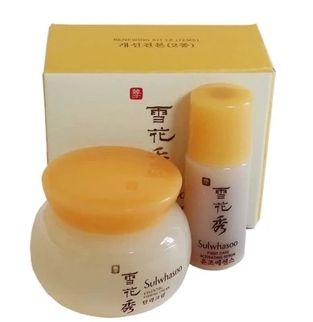

韩国雪花秀正品弹力面霜5ml+润燥精华4ml 小样2件套装 旅行装

雪花秀小样两件套韩国 润燥精华4ml + 弹力面霜5ml
【适合肤质】：任何肤质。
【使用方法】：
润燥精华：洁面后取适量的润燥精华于肌肤上，用指尖轻柔地涂抹。再用双手轻轻包裹脸部，用手温促进精华的吸收。
弹力面霜：使用完滋阴乳液（或其他品牌乳液）后，取适量均勻涂抹整个脸部和颈部，并让其自然吸收。如欲提高紧肤效果，建议由下至上、颈部至脸部轻轻按摩，随后以雪花秀的弹性指压法轻压穴位1分钟。
大家要记住润燥精华是雪花秀所有产品的基础!韩方化妆品和欧美化妆品不一样，尤其是雪花秀，它的产品里面有一个润燥精华，这个精华是在爽肤水之前使用，起到导入后面产品更好吸收的作用噢~
弹力面霜中特有的滋阴丹、滋阴补卫丹等成分，能有效帮助您改善肌肤的现状，消除虚火，还原肌肤的紧致弹性，缓解随着年龄的增长而变得干燥的肌肤烦恼。
【润燥精华主要成分】：黄芪帮助肌肤增加循环，麦冬及甘草活化滋润肌肤，将有效成分迅速传递至深层，重塑肌肤光采。
【弹力面霜主要成分】：含有滋阴丹和滋阴补卫丹，还原肌肤的紧致弹性。更含有让肌肤变得细腻光滑的石榴、酵母、当归、川弓、银杏叶等韩方植物成分。从内到外彻底滋补肌肤的韩方草药面霜，令肌肤充满健康光彩、重拾弹性。
【品牌介绍】
雪花秀-化妆品牌，是韩国最大的化妆品之一的韩国爱茉莉（太平洋）株式会社旗下爱茉莉化妆品研究院通过20多年的不断努力以人参为主-20多种汉方药材搭配制造出的一款抗皱、抗老化非常明显的化妆品之一。是名符其实的而韩国第一化妆品品牌。
虽然仅诞生于1997年，却根植于一系列代表韩方化妆品。73年以人参为基础开发的“真生参美”，75年的“参美”，还有以强调韩方成分效果协同而开发的87年“雪花”，根据更高“韩方理论”选定之功效广受科学肯定的97年“雪花秀”记忆2004年亮丽登场的“新雪花秀”，传承着（株）太平洋韩方化妆品的正统传统。